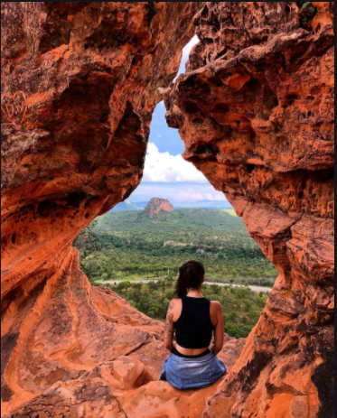

Maranhão é uma das 27 unidades federativas do Brasil, localizada na Região Nordeste do país. O estado faz divisa com três estados
brasileiros: Piauí (leste), Tocantins (sul e sudoeste) e Pará (oeste), além do Oceano Atlântico (norte). Com área de 331 937,450 km²
e com 217 municípios, é o segundo maior estado da região Nordeste e o oitavo maior estado do Brasil. Com uma população de 7 035 055
habitantes[7], é o 11º estado mais populoso do país. A capital e cidade mais populosa é São Luís. Outros municípios com população
superior a cem mil habitantes são Imperatriz, São José de Ribamar, Timon, Caxias, Codó, Paço do Lumiar, Açailândia e Bacabal.
Em termos de produto interno bruto, é o quarto estado mais rico da Região Nordeste do Brasil e o 17º estado mais rico do Brasil.
As principais atividades econômicas são a indústria (o trabalho de transformar alumínio e alumina, celulose, alimentícia, madeireira),
os serviços, o extrativismo vegetal (babaçu), a agricultura (soja, mandioca, arroz, milho) e a pecuária. Possui um dos menores
Índices de Desenvolvimento Humano (IDH) do país, com 0,687 pontos.
Conheça mais sobre a maravilhosa Maranhão
lençóis maranhenses
Conheça mais sobre a maravilhosa Maranhão
Chapada das mesas
Passeios imperdíveis na Chapada das Mesas
Encanto Azul
Poço Azul
Cachoeira de Santa Bárbara
Parque Nacional da Chapada das Mesas
São Romão
Cachoeiras da Prata
Complexo Pedra Caída
Portal da Chapada
Refúgio Ecológico Serra Torre da Lua
Pôr do sol no rio Tocantins
Passeio Lagoa Bonita
Com saída às 14h e retorno após o pôr do sol.
Localizada em um dos pontos de dunas mais altas do parque, a Lagoa Bonita se destaca pela bela composição da paisagem: uma
preposição de dunas. Percurso de 1h20min em veículo 4x4 até chegar ao parque, seguindo de uma caminhada junto ao guia,
ao chegar no ponto inicial, o visitante realiza uma escalada em uma duna de aproximadamente 30 metros de altura, após isso
faz-se caminhada visitando as principais lagoas: Bonita e Maçarico, parada para banho nessas lagoas. Chegada em Barreirinhas
por volta das 19h/19h30min. Passeio lagoa bonita a tarde saindo as 14:20 de carro traçado 4×4 Toyota retorno às 19:00 horas.

Sobrevoo Lençóis Maranhenses
Nosso sobrevoo pelos lençóis tem a duração de 25 a 30 minutos
saindo do Aeroporto Municipal de Barreirinhas sobrevoando o Rio Preguiças, Pequenos Lençóis, Farol de Mandacaru, Praia do Caburé,
Foz do Rio Preguiças, Vila Atins em direção aos Grandes Lençóis, finalizando o passeio pelas Lagoas Azul, Esmeralda e Preguiças,
retornando à cidade de Barreirinhas. O segundo roteiro sobrevoa basicamente os Grandes Lençóis, saindo do aeroporto municipal de
Barreirinhas sobrevoando o Rio Preguiças, as Lagoas Azul, Esmeralda e Preguiças, voando diretamente até os Oasis Baixa Grande e
Queimada dos Britos, retornando à cidade de Barreirinhas.
Boia Cross
Com saída somente pela manhã as 08h30min.
em veículo 4x4, percurso de 01h20min até o povoado Cardosa onde pegaremos as bóias para fazer flutuação no Rio Formiga, rio de
águas cristalinas, banho refrescante, além de uma ótima opção para mergulho, a descida pelo rio dura em média 1h, descida calma
sem correntezas fortes. Chegada em Barreirinhas por volta das 13h. Passeio de boia flutuante sobre Rio formiga saindo as 8:30
Direção o Rio uma aventura sensacional retorno às 12:00 horas..